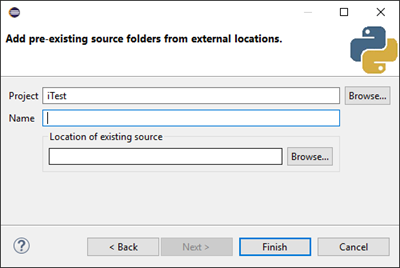
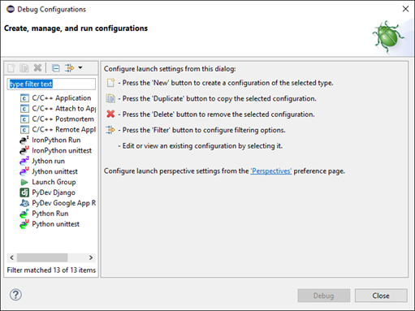

Eclipse and PyDev Setup¶
Overview¶
The iTest package includes the PythonWin IDE to help with debugging Python scripts. You can launch this as a standalone application or from Test Manager by right-clicking a script and selecting the Debug... option. In some cases, the IDE may not be adequate for all developers. This guide explains how to install Eclipse and connect it to the iTest PythonEngine executable to use the Eclipse debugger instead of PythonWin. It outlines the process for downloading and installing Eclipse and adding PyDev to enhance your debugging system.
Downloading and Installing Eclipse¶
To download Eclipse:
- Using your web browser, navigate to https://www.eclipse.org/downloads/. At the time of this document's creation, Eclipse Neon is the version used.
Get Eclipse Neon
- Click Download 64 bit. This opens a new web page.
- Click Download on the web page to download the program.
Download
- Save the Eclipse install to a location on your PC.
- Open the install. A list of Eclipse installations displays.
Eclipse Installer
Installation Type
- Select Eclipse IDE for C/C++ Developers.
- Select an installation folder.
Installation Folder
- Click Install to begin the program installation.
Installing
- Click Launch to launch the program.
Launch
eclipse neon.1
- Select a workspace directory and click OK. The Welcome screen displays.
Select Your Workspace Directory
Welcome
Installing PyDev¶
To install PyDev onto Eclipse:
- Select Help > Install New Software from the main menu. The Available Software dialog displays.
Install New Software
Available Software Dialog
- In the Work with field, enter http://pydev.org/updates and click Add.
- You are prompted to add a repository. Enter PyDev and click OK.
PyDev Repository

- Click the Select All button, and then click Next.
Select All Installation Items
- Review the installation items and click Next.
Review Installation Items
- Review the licenses and accept the terms of agreement. Click Finish.
Review Licenses and Accept Terms of Agreement
- Click OK on the security warning dialog.
Security Warning Dialog
- Select the option to trust the certificates and click OK.
Trust Certificates
- Once PyDev has been installed, you will need to restart Eclipse. When prompted, click Yes. Eclipse will close and reopen.
Restart Eclipse
- Select Window > Preferences from the main menu to open the Preferences dialog.
Preferences
Preferences Dialog
- Use the navigation menu to open the PyDev, Interpreters, and the Python Interpreter branches.
Python Interpreter Branch
- Click the New button. This opens the Select Interpreter dialog.
Select Interpreter Dialog

- Enter iTestPython in the interpreter name field.
- Use the browse button to search for the Python interpreter located in the iTest installation. This is the python.exe application file.
iTest Installation Python Interpreter
- Click Open.
Python Interpreters
- Click OK. A new dialog displays, prompting you to select folders to add to the SYSTEM python path. By default, all folder options are selected. Use this setting.
Python Folder Selection
- Click OK. Your Python Interpreter set up is complete.
Python Interpreters
- Select OK to exit the Preferences dialog.
Creating and Setting Up Your Python Project¶
To create a new Python project:
- Exit the Welcome screen.
- Open the PyDev perspective. Select Window > Perspective > Open Perspective > Other... from the main menu. This opens the Open Perspective dialog.
PyDev Perspective
Open Perspective
- Highlight PyDev and click OK.
New PyDev Perspective
- Right-click the default named folder and select New. The Select a Wizard dialog opens.
Select a Wizard Dialog
- Expand the PyDev folder.
- Select the PyDev Project option.
- Click Next. This opens the PyDev Project dialog.
PyDev Project Dialog
- Enter "iTest" as the name of the project.
- Use the remaining default settings. Click Finish.
- Right-click the iTest project folder and New > Other....
Your Project
- Expand the PyDev folder and highlight the &Link to Existing Source subfolder.
Link to Existing Source
- Click Next. This opens the Add Pre-Existing Source Folders dialog.
Pre-Existing Source Folders Dialog

- Enter "PythonScripts" in the Name field.
- Click the Browse button to locate the installation location of your PythonScripts folder.
Link to Existing Source
- Click Finish.
Setting Up Debug Configuration¶
To set up debug configuration:
- Expand the iTest project folder and the PythonScripts folder.
Expand the Project Folder
- Right-click the script to debug. Select Debug As > Python Run from the menu options.
Debug Script
The debug of the python script results in an error message. This is due to missing DLLs.
Console Message
Open the Eclipse Debug Configurations:
- Select Run > Debug Configurations... from the main menu. This opens the Debug Configurations dialog.
Debug Configurations
Debug Configurations Dialog

- Select your configuration.
Configuration
- Select the Environment tab.
Environment Tab
- Select the New button. This opens the New Environment Variable dialog.
New Environment Variable

- Add the iTest Execute folder to the path.
Adding the iTest Execute Folder
- Click OK.
- Click Close and save your new debug configuration.
You can now begin debugging your iTest python scripts.
Debugging iTest Python Scripts Remotely¶
To debug iTest Python Scripts remotely:
- Open the Python Debug Perspective. Select Window > Perspective > Open Perspective > Other... from the main menu.
Opening Debug Perspective
- Select Debug from the Open Perspective dialog.
Open Perspective Dialog
- Click OK.
- Select the PyDev Debug Server icon.
Starting the PyDev Server
Now, when you call Python Scripts from iTest, it will stop at the breakpoint.